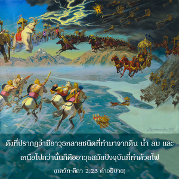

ดวงวิญญาณถูกหั่นให้เป็นชิ้นๆด้วยอาวุธใดๆไม่ได้ ถูกไฟเผาให้ไหม้ไม่ได้ ถูกน้ำทำให้เปียกไม่ได้ หรือถูกลมทำให้แห้งก็ไม่ได้

อาวุธทุกชนิดไม่ว่าจะเป็นดาบ อาวุธไฟ อาวุธฝน อาวุธลมสลาตัน หรืออื่นๆ ก็ไม่สามารถที่จะสังหารดวงวิญญาณได้ ดังที่ปรากฏว่ามีอาวุธหลายชนิดที่ทำมาจากดิน น้ำ ลม และเหนือไปกว่านั้นก็คืออาวุธสมัยปัจจุบันที่ทำด้วยไฟ แม้กระทั่งอาวุธนิวเคลียร์ในยุคปัจจุบันก็จัดว่าอยู่ในอาวุธประเภทไฟ ในอดีตกาลมีอาวุธอื่นๆ ที่ทำมาจากธาตุวัตถุที่ต่างกัน อาวุธไฟจะถูกแก้ด้วยอาวุธน้ำซึ่งวิทยาศาสตร์ปัจจุบันยังไม่ทราบ และวิทยาศาสตร์สมัยใหม่ก็ไม่ทราบเกี่ยวกัอาวุธลมสลาตัน อย่างไรก็ดี ดวงวิญญาณไม่สามารถถูกหั่นเป็นชิ้นๆ หรือถูกทำลายด้วยอาวุธชนิดใดได้ ไม่ว่าจะเป็นสิ่งประดิษฐ์ทางวิทยาศาสตร์แบบไหนก็ตาม
พวกมายาวาที ไม่สามารถอธิบายได้ว่าปัจเจกวิญญาณมามีชีวิตอยู่ได้อย่างไร เนื่องมาจากอวิชชาและถูกพลังแห่งความหลงครอบคลุมเอาไว้ จึงเป็นไปไม่ได้ที่จะตัดปัจเจกวิญญาณให้ออกจากดวงวิญญาณสูงสุด เพราะปัจเจกวิญญาณเป็นละอองอณูนิรันดรที่แยกมาจากอภิวิญญาณสูงสุด เพราะว่าเราเป็นปัจเจกละอองวิญญาณอมตะ (สนาตน) จึงมีแนวโน้มที่จะถูกปกคลุมด้วยพลังแห่งความหลง จึงทำให้ขาดความสัมพันธ์กับองค์ภควานฺ ดังเช่นประกายไฟ ถึงแม้ว่าจะมีคุณสมบัติเหมือนดังไฟ แต่มีแนวโน้มที่จะดับมอดเมื่อไฟหมด ใน วราห ปุราณ ได้อธิบายไว้ว่า สิ่งมีชีวิตเป็นละอองอณูที่แยกมาจากองค์ภควานฺ และจะเป็นอยู่เช่นนี้นิรันดร ใน ภควัท-คีตา ก็ได้กล่าวไว้เช่นเดียวกัน ดังนั้น ถึงแม้หลังจากที่ได้รับอิสรภาพจากความหลง สิ่งมีชีวิตจะยังคงรักษาบุคลิกภาพของตนเอง ดั่งเช่นหลักฐานคำสั่งสอนขององค์กฺฤษฺณที่ทรงให้แด่อรฺชุน และ อรฺชุน ทรงได้รับอิสรภาพด้วยความรู้ที่ได้รับจากองค์กฺฤษฺณ แต่ อรฺชุน ทรงไม่เคยที่จะกลายมาเป็นหนึ่งเดียวกับองค์กฺฤษฺณ